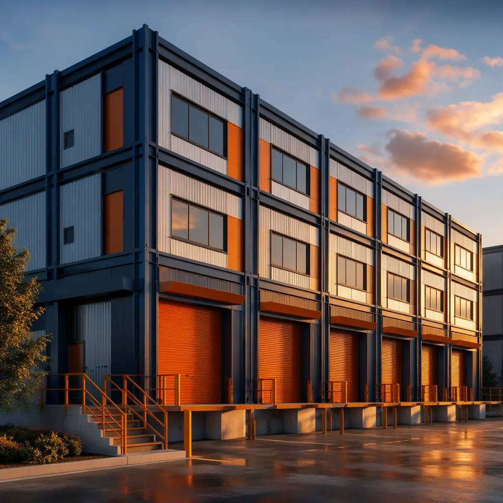
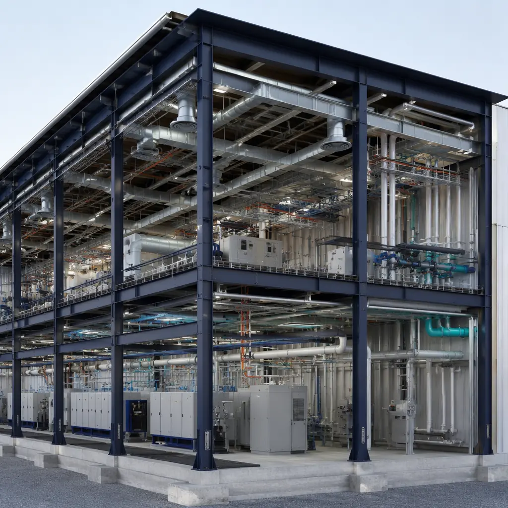
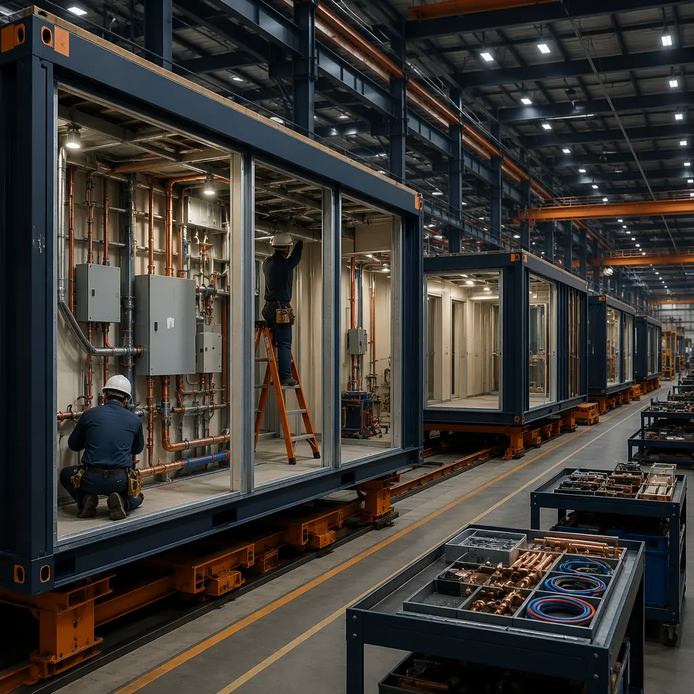
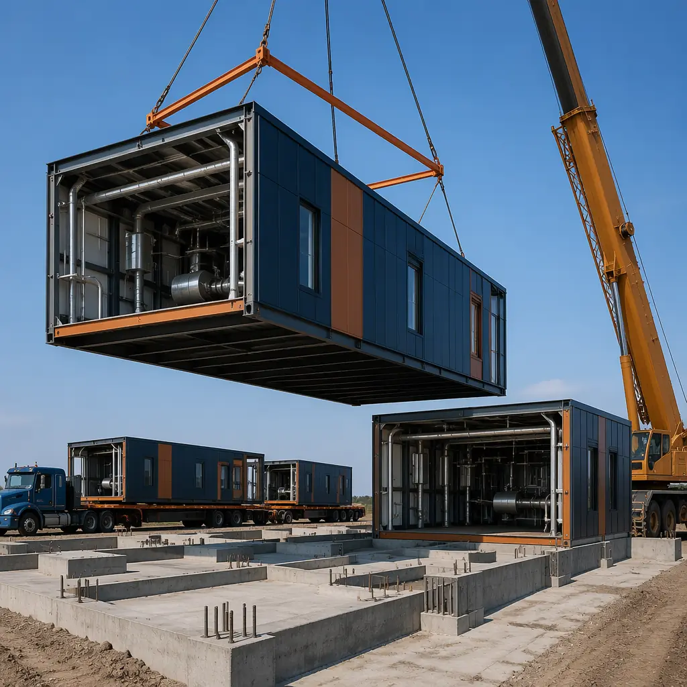

Light manufacturing in the United States is undergoing a structural expansion that conventional construction cannot keep pace with. The reshoring of electronics assembly, medical device production, electric vehicle component manufacturing, and pharmaceutical packaging — accelerated by the CHIPS Act ($52.7 billion in semiconductor incentives), the Inflation Reduction Act's domestic content requirements for clean energy components, and supply chain disruptions that exposed the vulnerability of single-source overseas production — has created a wave of demand for new light industrial facilities that need to be operational within 12 months, not the 18–24 months that conventional tilt-up or steel-frame construction typically requires. The US light manufacturing sector added 132,000 jobs in 2024 alone (Bureau of Labor Statistics), and the National Association of Manufacturers projects that 3.8 million manufacturing jobs will need to be filled by 2033 — each one requiring physical production space that does not yet exist. Modular light manufacturing construction compresses the delivery timeline from 14–24 months to 8–14 months while meeting the specific floor load capacity, MEP infrastructure density, cleanroom integration, and future expansion flexibility requirements that distinguish production facilities from standard warehouses. For manufacturers evaluating facility delivery methods, see our guide to modular industrial warehouse construction and our analysis of modular cold storage facilities — building types that share structural and operational requirements with light manufacturing.

Why Light Manufacturing Is Different from Warehousing — And Why Modular Addresses the Unique Structural Demands
Light manufacturing facilities occupy a structural and operational middle ground between distribution warehouses and heavy industrial plants. A warehouse needs a concrete slab, dock doors, and high-bay storage — structural demands that are well-understood and commoditized. A light manufacturing facility needs the same floor area but with fundamentally different engineering requirements: floor slabs designed for dynamic equipment loads rather than static pallet racking, MEP infrastructure density 3–5x higher than a warehouse (compressed air lines, process cooling water, dust collection ductwork, 480V three-phase power distribution to individual workstations), and floor plans that must support reconfigurable production lines rather than fixed storage layouts. These differences mean that the per-square-foot construction cost for light manufacturing runs $180–$320 compared to $100–$150 for a basic warehouse — and the schedule impact is even more pronounced because the MEP coordination alone can add 8–12 weeks to the critical path in conventional construction.
Floor load capacity for dynamic equipment. A standard warehouse slab is designed for uniform static loads of 2,500–4,000 psf from pallet racking. A light manufacturing facility must support dynamic point loads from CNC machining centers (individual machine footprints generating 800–1,500 psf concentrated loads with vibration), injection molding machines (requiring isolated foundations to prevent vibration transmission to adjacent precision assembly areas), and automated guided vehicles (AGVs) that impose rolling wheel loads of 3,000–5,000 lbs per axle. The slab design for light manufacturing typically requires 6–8 inches of 4,000 psi reinforced concrete with a flatness specification of FF50/FL35 for AGV compatibility — compared to FF25/FL20 for a standard warehouse. In modular construction, the floor slab is cast on site as a conventional foundation, but the production modules are built in the factory with structural steel frames and factory-installed equipment mounting rails that distribute dynamic loads to the slab through engineered base plates — eliminating the field welding and anchor bolt installation that typically consumes 2–3 weeks of on-site construction schedule. For a broader discussion of structural engineering in modular construction, see our analysis of modular building foundation systems.
MEP infrastructure density — the silent schedule killer. The MEP (mechanical, electrical, plumbing) density in a light manufacturing facility exceeds that of a Class A office building by a factor of 3–5x. A 50,000 sq ft electronics assembly facility requires: 480V/277V three-phase power with 8–12 watts per square foot for production equipment (vs. 3–5 W/sq ft for a warehouse); compressed air distribution at 90–120 psi with oil-free dryers for cleanroom-compatible air quality; process cooling water loops for injection molding machines, laser cutting equipment, and thermal test chambers; dust collection and fume extraction ductwork for soldering, welding, and conformal coating stations; and HVAC systems sized for 15–25 CFM per square foot of process heat rejection (vs. 0.5–1.5 CFM/sq ft for a warehouse). In conventional construction, these systems are installed sequentially by separate trade contractors — electrical, then mechanical piping, then ductwork, then process utilities — with each trade's work dependent on the previous trade completing rough-in. In modular construction, the MEP infrastructure is installed in the factory module where trades can work simultaneously on different modules rather than sequentially on a single floor plate. The result is a 40–60% reduction in on-site MEP installation duration, directly compressing the overall construction schedule. For manufacturers evaluating build-vs-buy decisions for production facilities, see our analysis of modular build-vs-buy total cost of ownership — the framework applies equally to manufacturing facility decisions.

Cleanroom and Controlled Environment Integration — Modular's Strongest Advantage
A growing percentage of light manufacturing — electronics assembly, medical device production, pharmaceutical packaging, optical component fabrication — requires ISO-classified cleanroom environments integrated into the production floor. A Class 8 (ISO 14644-1) cleanroom for electronics assembly requires 20–30 air changes per hour through HEPA filtration, positive pressure relative to adjacent spaces, and surface materials that do not shed particles — requirements that are fundamentally incompatible with a standard warehouse shell. In conventional construction, building a cleanroom inside a warehouse shell means constructing a room-within-a-room: independent ceiling grid with HEPA fan filter units, non-shedding wall panels (FRP or powder-coated aluminum), and epoxy or vinyl flooring with coved transitions — all of which adds $120–$250 per square foot to the base building cost and 8–14 weeks to the construction schedule.
In modular construction, the cleanroom is built as a completed module in the factory: the HEPA filtration ceiling grid is installed and tested, the non-shedding wall panels are mounted to the module's structural steel frame, the epoxy flooring is applied and cured in a controlled environment, and the entire module is shipped to site as a finished, certified cleanroom. The factory environment allows cleanroom certification (particle count testing, airflow velocity measurement, pressure differential verification) to occur before the module leaves the factory — eliminating the 1–2 weeks of on-site commissioning and re-balancing that conventionally built cleanrooms require. For electronics manufacturers requiring Class 7 or Class 8 cleanroom integration, modular delivery compresses the cleanroom construction timeline from 12–18 weeks to 6–8 weeks of factory production, with the module arriving on site as a certified clean environment requiring only utility connections. See our deep dive on modular cleanroom and semiconductor facilities for the full engineering specification.
Production Scaling and Future Expansion — Designing for Growth
Light manufacturers face a facility planning paradox: build too small and constrain growth, build too large and carry unused square footage costs that erode margins. The National Association of Manufacturers reports that 76% of small and mid-sized manufacturers cite facility constraints as a barrier to accepting new production contracts — but 62% of the same companies cannot justify the capital expenditure for a conventionally built facility sized for 5-year projected growth because the payback period exceeds their capital planning horizon.
Modular construction addresses this paradox through phased deployment. A manufacturer can commission an initial 30,000 sq ft production facility with factory-built modules, begin production within 8–12 months, and then add 15,000 sq ft expansion modules in subsequent phases as production contracts are secured. The expansion modules connect to the initial structure through pre-engineered interface points — structural connection plates cast into the initial building's end walls, MEP risers terminated at capped valves and disconnects, and roof membrane details designed for future module attachment without disrupting the waterproofing integrity of the existing facility. This phased approach reduces the initial capital outlay by 40–50% compared to building the full 45,000 sq ft in a single phase, and the expansion modules can be produced and installed in 6–8 months rather than the 12–14 months that a conventional building addition requires. For manufacturers evaluating long-term facility total cost of ownership, see our analysis of modular building maintenance and lifecycle costs.

Site Selection Flexibility — When the Location Is Not an Empty Field
A significant portion of light manufacturing growth is occurring on constrained sites: urban infill locations near workforce populations, expansions adjacent to existing facilities on already-developed parcels, and brownfield redevelopment sites where the existing building footprint defines the available construction area. These sites present challenges for conventional construction — limited laydown area for materials, restricted crane access for steel erection, and noise/dust restrictions that limit permitted construction hours. Modular construction addresses these constraints by shifting 70–80% of the construction labor to the factory, reducing on-site construction activity to foundation work, module setting, and utility connections — operations that can be completed in 8–12 weeks on site compared to 8–12 months for conventional construction. For manufacturers building on brownfield sites or expanding existing facilities, see our developer's guide to modular construction permitting and zoning and our analysis of modular building additions and expansions.
Cost Structure — Where Modular Wins (and Where It Doesn't)
For light manufacturing facilities in the 20,000–80,000 sq ft range, modular construction delivers a total project cost that is 5–12% lower than conventional construction when the following conditions are met: MEP density exceeds 3 W/sq ft of process power, the facility includes cleanroom or controlled-environment space exceeding 15% of the floor area, and the construction site has constraints (urban location, limited laydown, weather window restrictions) that inflate conventional construction premiums. The cost advantage comes from three sources: factory labor productivity (25–35% more efficient than field labor for the same scope), reduced on-site general conditions (8–12 weeks vs. 8–12 months of site supervision, temporary facilities, and security), and compressed construction financing costs (6–9 fewer months of construction loan interest at 7–9% on a $5–$15 million project represents $175,000–$675,000 in direct savings). For a detailed breakdown of modular construction costs across building types, see our 2026 modular construction cost per square foot guide.

Is Modular Right for Your Manufacturing Facility?
Modular construction is not the right solution for every manufacturing facility — heavy industrial plants with 50-ton overhead cranes, continuous-process chemical manufacturing, and steel mills require specialized structural engineering that modular construction is not designed to deliver. But for the fastest-growing segment of the US manufacturing sector — electronics assembly, medical device production, EV component manufacturing, pharmaceutical packaging, and precision fabrication — modular construction delivers a facility that goes into production 6–9 months faster than conventional construction, with factory-installed MEP infrastructure that eliminates the trade-coordination delays that plague conventional industrial construction, and a phased expansion capability that aligns capital expenditure with production contract growth. The US light manufacturing construction market is projected to reach $28.4 billion by 2028 (Dodge Construction Network), driven by reshoring incentives, domestic content requirements, and the structural shift toward distributed manufacturing models that require smaller, faster-to-deploy facilities rather than single mega-plants. For the manufacturers and developers who evaluate modular delivery against these project requirements — and for the construction partners who invest in understanding the specific floor load, MEP density, and cleanroom integration demands of light manufacturing — modular construction offers a timeline, cost, and flexibility proposition that conventional industrial construction cannot match.